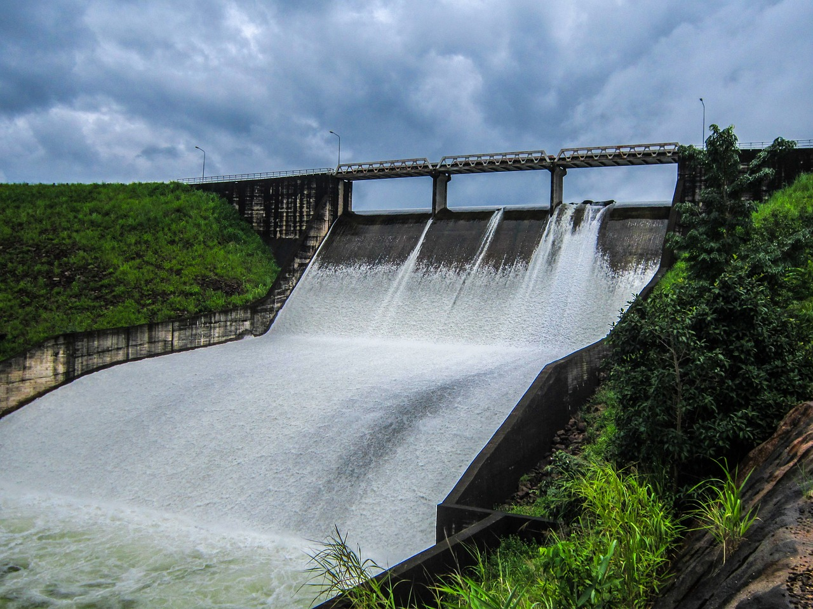

Vattenkraft är energi som utvinns ur strömmande vatten i ett vattenkraftverk. Strömmarna kan finnas i vattendrag, eller skapas genom temperaturskillnader i världshaven eller som tidvattenströmmar. Även konstgjorda vattendrag kan användas. Det man vanligen avser med vattenkraft är utvinning av den lägesenergi som vattnet har fått i sitt naturliga kretslopp genom soldriven avdunstning följt av nederbörd på högre liggande markområden. Vatten från regn eller smält is/snö samlas upp i floder och sjöar. När vattnet från en damm strömmar ner till ett i strömmen anlagt vattenkraftverk utvinns den kraft som definieras av nivåskillnaden i meter mellan vattenytan i dammen och på nedsidan av kraftverket samt vattenflödet i kubikmeter per sekund.
Fram till mitten av 1800-talet nyttjades vattenkraften främst genom att placera vattenhjul i forsar och fall för drivning av exempelvis kvarnar som malde säd eller som drivkälla för smideshammare och andra direktdrivna maskiner. Under 1800-talet började vattenturbiner allmänt användas, vilket möjliggjorde utnyttjandet av såväl högre fallhöjd som större total vattenkraft, än vad förhållandet varit vid de gammalmodiga vattenverken. I en turbin omvandlas energin till mekanisk energi som driver en generator som alstrar elektrisk energi. Under sista decenniet av 1800-talet utvecklades också den elektriska transmissionen, så att vattenkraften kom att kunna försörja fabriker och konsumenter med kraft på platser som låg långt från själva kraftverket.
Vattenkraften är reglerbar och kan snabbt anpassas till de förändringar som sker i konsumtionen av el. Möjligheten att reglera vattenkraftproduktionen är en viktig egenskap för att kunna bygga ut annan förnybar kraftproduktion, som t.ex. vindkraft eller solenergi, i större omfattning i hela norra Europa.